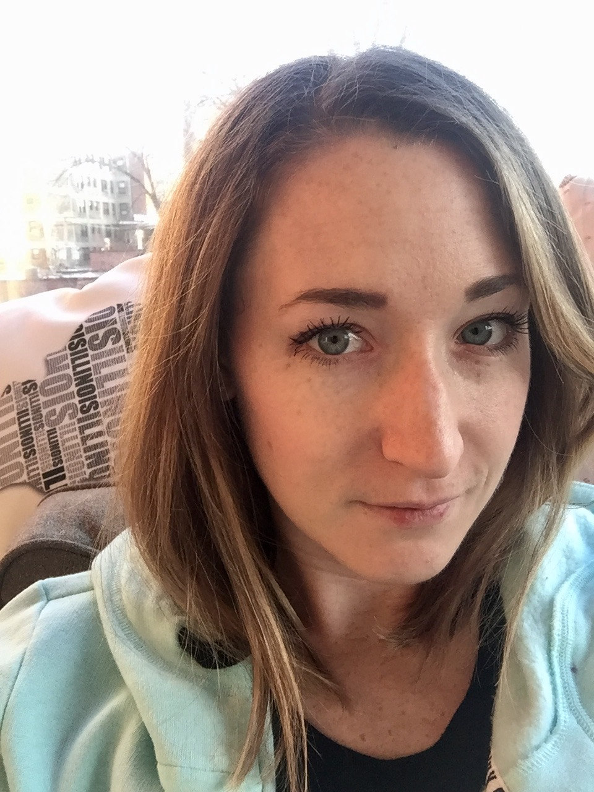

About Me
I am 27 years old, hail from Michigan after leaving Ohio, and have lived in Chicago for six years. I like apples...and icecream. I order pizza once a week with coworkers, so obviously I'm on a good track for a healthy lifestyle. To add, I sometimes enjoy binging a good Netflix series, and reading (all activities that seem to involve sitting down and being a lazy noodle). I've played piano ever since I can remember and have a small kitten at home who is an attention craving beaut. Also, my current obsession involves a murder podcast hosted by two hilarious, typical Cali women.
I have degrees in Biochemistry as well as Medical Laboratory Science and currently work as a medical technologist in a transplant surgery lab. In laman's terms, that involves testing patient blood as well as performing organ crossmatches between the donor and recipient. When I'm not hard at work or being a lazy, dumb noodle, I am into brunching, college sports, nail polish, outdoor activities, friends and family.
Connect With Me